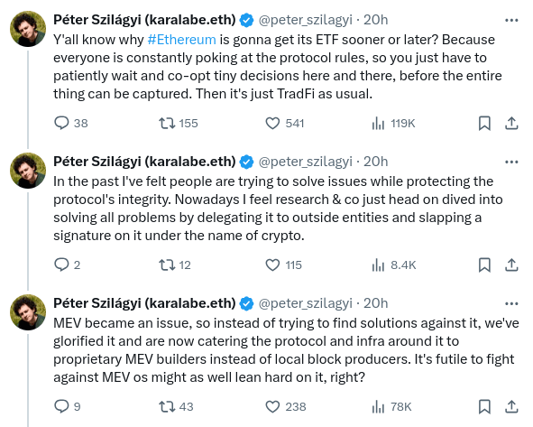
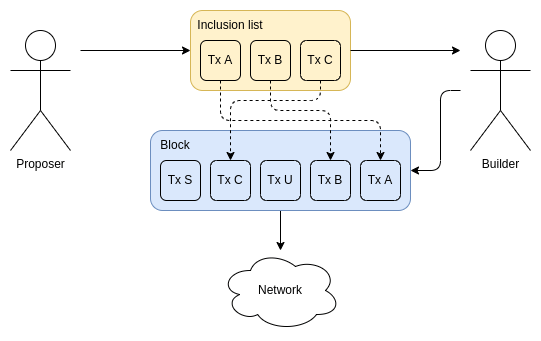
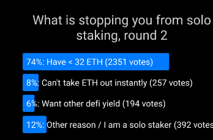
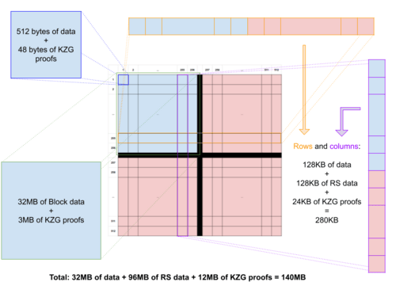
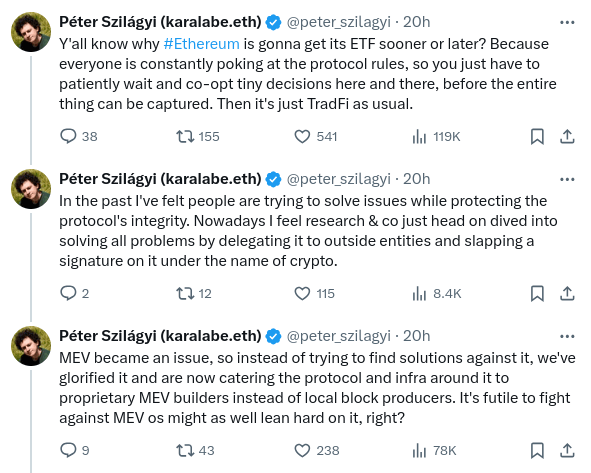
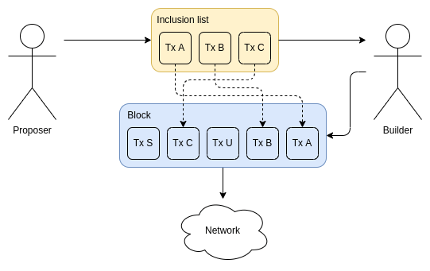
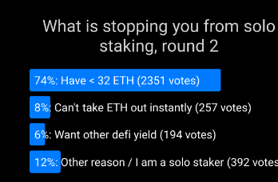
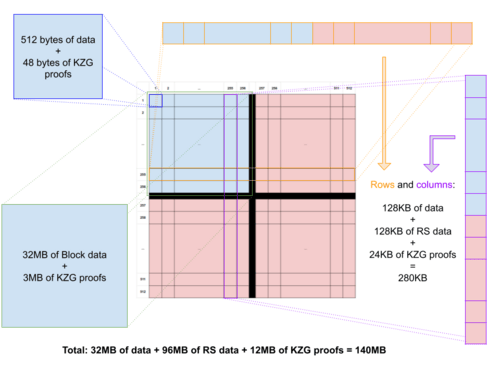

The near and mid-term future of improving the Ethereum network's permissionlessness and decentralization
2024 May 17
See all posts
The near and mid-term future of improving the Ethereum network's permissionlessness and decentralization
Special thanks to Dankrad Feist, Caspar Schwarz-Schilling and
Francesco for rapid feedback and review.
I am sitting here writing this on the final day of an Ethereum
developer interop in Kenya, where we made a large amount of progress
implementing and ironing out technical details of important upcoming
Ethereum improvements, most notably PeerDAS,
the Verkle tree transition and
decentralized approaches to storing history in the context of EIP 4444. From my own
perspective, it feels like the pace of Ethereum development, and our
capacity to ship large and important features that meaningfully improve
the experience for node operators and (L1 and L2) users, is
increasing.

Ethereum client teams working together to ship the Pectra
devnet.
Given this greater technical capacity, one important question to be
asking is: are we building toward the right goals? One
prompt for thinking about this is a recent series of unhappy tweets from
the long-time Geth core developer Peter Szilagyi:

These are valid concerns. They are concerns that many people in the
Ethereum community have expressed. They are concerns that I have on many
occasions had personally. However, I also do not think that the
situation is anywhere near as hopeless as Peter's tweets imply; rather,
many of the concerns are already being addressed by protocol features
that are already in-progress, and many others can be addressed by very
realistic tweaks to the current roadmap.
In order to see what this means in practice, let us go through the
three examples that Peter provided one by one. The goal is not to focus
on Peter specifically; they are concerns that are widely shared among
many community members, and it's important to address them.
MEV, and builder dependence
In the past, Ethereum blocks were created by miners, who used a
relatively simple algorithm to create blocks. Users send transactions to
a public p2p network often called the "mempool" (or "txpool"). Miners
listen to the mempool, and accept transactions that are valid and pay
fees. They include the transactions they can, and if there is not enough
space, they prioritize by highest-fee-first.
This was a very simple system, and it was friendly toward
decentralization: as a miner, you can just run default software, and you
can get the same levels of fee revenue from a block that you could get
from highly professional mining farms. Around 2020, however, people
started exploiting what was called miner extractable value
(MEV): revenue that could only be gained by executing complex
strategies that are aware of activities happening inside of various defi
protocols.
For example, consider decentralized exchanges like Uniswap. Suppose
that at time T, the USD/ETH exchange rate - on centralized
exchanges and on Uniswap - is $3000. At time T+11, the
USD/ETH exchange rate on centralized exchanges rises to $3005. But
Ethereum has not yet had its next block. At time T+12, it
does. Whoever creates the block can make their first transaction be a
series of Uniswap buys, buying up all of the ETH available on Uniswap at
prices from $3000 to $3004. This is extra revenue, and is called MEV.
Applications other than DEXes have their own analogues to this problem.
The Flash Boys 2.0 paper
published in 2019 goes into this in detail.

A chart from the Flash Boys 2.0 paper that shows the amount
of revenue capturable using the kinds of approaches described
above.
The problem is that this breaks the story for why mining (or,
post-2022, block proposing) can be "fair": now, large
actors who have better ability to optimize these kinds of extraction
algorithms can get a better return per block.
Since then there has been a debate between two strategies, which I
will call MEV minimization and MEV
quarantining. MEV minimization comes in two forms: (i)
aggressively work on MEV-free alternatives to Uniswap (eg. Cowswap), and (ii) build in-protocol
techniques, like encrypted mempools, that reduce the information
available to block producers, and thus reduce the revenue that they can
capture. In particular, encrypted mempools prevent strategies such as
sandwich attacks, which put transactions right before
and after users' trades in order to financially exploit them
("front-running").
MEV quarantining works by accepting MEV, but trying to limit its
impact on staking centralization by separating the market into two kinds
of actors: validators are responsible for attesting and proposing
blocks, but the task of choosing the block's contents gets
outsourced to specialized builders through an auction
protocol. Individual stakers now no longer need to worry about
optimizing defi arbitrage themselves; they simply join the auction
protocol, and accept the highest bid. This is called
proposer/builder separation (PBS). This approach has
precedents in other industries: a major reason why restaurants are able
to remain so decentralized is that they often rely on a fairly
concentrated set of providers for various operations that do have large
economies of scale. So far, PBS has been reasonably successful at
ensuring that small validators and large validators are on a fair
playing field, at least as far as MEV is concerned. However, it creates
another problem: the task of choosing which transactions get
included becomes more concentrated.
My view on this has always been that MEV minimization is good and we
should pursue it (I personally use Cowswap regularly!) - though
encrypted mempools have a lot of challenges, but MEV minimization will
likely be insufficient; MEV will not go down to zero, or even near-zero.
Hence, we need some kind of MEV quarantining too. This creates an
interesting task: how do we make the "MEV quarantine box" as
small as possible? How do we give builders the least possible
power, while still keeping them capable of absorbing the role of
optimizing arbitrage and other forms of MEV collecting?
If builders have the power to exclude transactions from a block
entirely, there are attacks that can quite easily arise. Suppose that
you have a collateralized
debt position (CDP) in a defi protocol, backed by an asset whose
price is rapidly dropping. You want to either bump up your collateral or
exit the CDP. Malicious builders could try to collude to refuse to
include your transaction, delaying it until prices drop by enough that
they can forcibly liquidate your CDP. If that happens, you would have to
pay a large penalty, and the builders would get a large share of it. So
how can we prevent builders from excluding transactions and
accomplishing these kinds of attacks?
This is where inclusion lists come in.

Source: this
ethresear.ch post.
Inclusion lists allow block proposers (meaning, stakers) to choose
transactions that are required to go into the block. Builders can still
reorder transactions or insert their own, but they must include the
proposer's transactions. Eventually, inclusion lists were
modified to constrain the next block rather than the
current block. In either case, they take away the builder's ability to
push transactions out of the block entirely.
The above was all a deep rabbit hole of complicated background. But
MEV is a complicated issue; even the above description misses lots of
important nuances. As the old adage goes, "you may not be looking for
MEV, but MEV is looking for you". Ethereum researchers are
already quite aligned on the goal of "minimizing the quarantine
box", reducing the harm that builders can do (eg. by excluding or
delaying transactions as a way of attacking specific applications) as
much as possible.
That said, I do think that we can go even further. Historically,
inclusion lists have often been conceived as an "off-to-the-side
special-case feature": normally, you would not think about them, but
just in case malicious builders start doing crazy things, they give you
a "second path". This attitude is reflected in current design decisions:
in the current
EIP, the gas limit of an inclusion list is around 2.1 million. But
we can make a philosophical shift in how we think about
inclusion lists: think of the inclusion list as being the
block, and think of the builder's role as being an
off-to-the-side function of adding a few transactions to collect MEV.
What if it's builders that have the 2.1 million gas limit?
I think ideas in this direction - really pushing the quarantine box
to be as small as possible - are really interesting, and I'm in favor of
going in that direction. This is a shift from "2021-era
philosophy": in 2021-era philosophy, we were more enthusiastic
about the idea that, since we now have builders, we can "overload" their
functionality and have them serve users in more complicated ways, eg. by
supporting ERC-4337 fee markets.
In this new philosophy, the transaction validation parts of ERC-4337
would have to be enshrined into the protocol. Fortunately, the ERC-4337
team is already increasingly
warm about this direction.
Summary: MEV thought has already been going back in the
direction of empowering block producers, including giving block
producers the authority to directly ensure the inclusion of users'
transactions. Account abstraction proposals are already going
back in the direction of removing reliance on centralized relayers, and
even bundlers. However, there is a good argument that we are not going
far enough, and I think pressure pushing the development process to go
further in that direction is highly welcome.
Liquid staking
Today, solo stakers make up a relatively small percentage of all
Ethereum staking, and most staking is done by various providers - some
centralized operators, and others DAOs, like Lido and RocketPool.

I have done my own research - various polls [1] [2], surveys,
in-person conversations, asking the question "why are you - specifically
you - not solo staking today?" To me, a robust solo staking ecosystem is
by far my preferred outcome for Ethereum staking, and one of the best
things about Ethereum is that we actually try to support a robust solo
staking ecosystem instead of just surrendering to delegation. However,
we are far from that outcome. In my polls and surveys, there are a few
consistent trends:
- The great majority of people who are not solo staking cite their
primary reason as being the 32 ETH minimum.
- Out of those who cite other reasons, the highest is technical
challenge of running and maintaining a validator node.
- The loss of instant availability of ETH, the security risks of "hot"
private keys, and the loss of ability to simultaneously participate in
defi protocols, are significant but smaller concerns.
|

|

|
The main reasons why people are not solo staking, according to
Farcaster polls.
There are two key questions for staking research to resolve:
- How do we solve these concerns?
- If, despite effective solutions to most of these concerns, most
people still don't want to solo stake, how do we keep the
protocol stable and robust against attacks despite that fact?
Many ongoing research and development items are aimed precisely at
solving these problems:
- Verkle trees plus EIP-4444 allow
staking nodes to function with very low hard disk requirements.
Additionallty, they allow staking nodes to sync almost instantly,
greatly simplifying the setup process, as well as operations such as
switching from one implementation to another. They also make Ethereum
light clients much more viable, by reducing the data bandwidth needed to
provide proofs for every state access.
- Research (eg.
these proposals) into ways to allow a much larger valdiator set
(enabling much smaller staking minimums) while at the same time reducing
consensus node overhead. These ideas can be implemented as part of single slot
finality. Doing this would also makes light clients safer, as they
would be able to verify the full set of signatures instead of relying on
sync
committees).
- Ongoing Ethereum client optimizations keep reducing the cost and
difficulty of running a validator node, despite growing history.
- Research on penalties
capping could potentially mitigate concerns around private key risk,
and make it possible for stakers to simultaneously stake their ETH in
defi protocols if that's what they wish to do.
- 0x01
Withdrawal credentials allow stakers to set an ETH address as their
withdrawal address. This makes decentralized staking pools more viable,
giving them a leg up against centralized staking pools.
However, once again there is more that we could do.
It is theoretically possible to allow validators to withdraw much more
quickly: Casper FFG continues to be safe even if the validator set
changes by a few percent ever time it finalizes (ie. once per epoch).
Hence, we could reduce the withdrawal period much more if we
put effort into it. If we wanted to greatly reduce the minimum deposit
size, we could make a hard decision to trade off in other
directions, eg. if we increase the finality time by 4x, that would allow
a 4x
minimum deposit size decrease. Single slot finality would later
clean this up by moving beyond the "every staker participates in every
epoch" model entirely.
Another important part of this whole question is the
economics of staking. A key question is: do we want staking to
be a relatively niche activity, or do we want everyone or almost
everyone to stake all of their ETH? If everyone is staking, then what is
the responsibility that we want everyone to take on? If people end up
simply delegating this responsibility because they are lazy, that could
end up leading to centralization. There are important and deep
philosophical questions here. Incorrect answers could lead Ethereum down
a path of centralization and "re-creating the traditional financial
system with extra steps"; correct answers could create a shining example
of a successful ecosystem with a wide and diverse set of solo stakers
and highly decentralized staking pools. These are questions that touch
on core Ethereum economics and values, and so we need more diverse
participation here.
Hardware requirements of
nodes
Many of the key questions in Ethereum decentralization end up coming
down to a question that has defined blockchain politics for
a decade: how accessible do we want to make running a node,
and how?
Today, running a node is hard. Most people do not do it. On the
laptop that I am using to write this post, I have a reth node, and it takes
up 2.1 terabytes - already the result of heroic software engineering and
optimization. I needed to go and buy an extra 4 TB hard drive to put
into my laptop in order to store this node. We all want running a node
to be easier. In my ideal world, people would be able to run nodes on
their phones.
As I wrote above, EIP-4444 and Verkle trees are two key technologies
that get us closer to this ideal. If both are implemented, hardware
requirements of a node could plausibly eventually decrease to less than
a hundred gigabytes, and perhaps to near-zero if we eliminate the
history storage responsibility (perhaps only for non-staking nodes)
entirely. Type 1
ZK-EVMs would remove the need to run EVM computation yourself, as
you could instead simply verify a proof that the execution was correct.
In my ideal world, we stack all of these technologies together, and even
Ethereum browser extension wallets (eg. Metamask, Rabby) have a built-in
node that verifies these proofs, does data availability sampling, and is
satisfied that the chain is correct.

The vision described above is often called "The
Verge".
This is all known and understood, even by people raising the concerns
about Ethereum node size. However, there is an important concern:
if we are offloading the responsibility to maintain state and
provide proofs, then is that not a centralization vector? Even if they
can't cheat by providing invalid data, doesn't it still go
against the principles of Ethereum to get too dependent on
them?
One very near-term version of this concern is many people's
discomfort toward EIP-4444: if regular Ethereum nodes no longer need to
store old history, then who does? A common answer is: there are
certainly enough big actors (eg. block explorers, exchanges, layer 2s)
who have the incentive to hold that data, and compared to the 100 petabytes
stored by the Wayback Machine, the Ethereum chain is tiny. So it's
ridiculous to think that any history will actually be lost.
However, this arguments relies on dependence on a small number of
large actors. In my taxonomy
of trust models, it's a 1-of-N assumption, but the N is pretty
small. This has its tail risks. One thing that we could do instead is to
store old history in a peer-to-peer network, where each node
only stores a small percentage of the data. This kind of
network would still do enough copying to ensure robustness: there would
be thousands of copies of each piece of data, and in the future we could
use erasure coding (realistically, by putting history into EIP-4844-style blobs, which already
have erasure coding built in) to increase robustness further.

Blobs have erasure coding within blobs and
between blobs. The easiest way to make ultra-robust storage for
all of Ethereum's history may well be to just put beacon and
execution blocks into blobs. Image
source: codex.storage
For a long time, this work has been on the backburner; Portal Network exists, but
realistically it has not gotten the level of attention commensurate with
its importance in Ethereum's future. Fortunately, there is now strong
interest in momentum toward putting far more resources into a minimized
version of Portal that focuses on distributed storage, and
accessibility, of history. This momentum should be built on, and we
should make a concerted effort to implement EIP-4444 soon, paired with a
robust decentralized peer-to-peer network for storing and retrieving old
history.
For state and ZK-EVMs, this kind of distributed approach is harder.
To build an efficient block, you simply have to have the full state. In
this case, I personally favor a pragmatic approach: we define,
and stick to, some level of hardware requirements needed to have a "node
that does everything", which is higher than the (ideally
ever-decreasing) cost of simply validating the chain, but still low
enough to be affordable to hobbyists. We rely on a 1-of-N
assumption, where we ensure that the N is quite large. For example, this
could be a high-end consumer laptop.
ZK-EVM proving is likely to be the trickiest piece, and real-time
ZK-EVM provers are likely to require considerably beefier hardware than
an archive node, even with advancements
like Binius, and worst-case-bounding with multidimensional
gas. We could work hard on a distributed proving network,
where each node takes on the responsibility to prove eg. one percent of
a block's execution, and then the block producer only needs to aggregate
the hundred proofs at the end. Proof aggregation trees could help
further. But if this doesn't work well, then one other compromise would
be to allow the hardware requirements of proving to get higher, but make
sure that a "node that does everything" can verify Ethereum blocks
directly (without a proof), fast enough to effectively participate in
the network.
Conclusions
I think it is actually true that 2021-era Ethereum thought became too
comfortable with offloading responsibilities to a small number of
large-scale actors, as long as some kind of market mechanism or zero
knowledge proof system existed to force the centralized actors to behave
honestly. Such systems often work well in the average case, but fail
catastrophically in the worst case.
We're not doing this.
At the same time, I think it's important to emphasize that current
Ethereum protocol proposals have already significantly moved away from
that kind of model, and take the need for a truly decentralized network
much more seriously. Ideas around stateless nodes, MEV mitigations,
single-slot finality, and similar concepts, already are much further in
this direction. A year ago, the idea of doing data availability sampling
by piggy-backing on relays as semi-centralized nodes was seriously
considered. This year, we've moved beyond the need to do such things,
with surprisingly robust progress on PeerDAS.
But there is a lot that we could do to go further in this direction,
on all three axes that I talked about above, as well as many other
important axes. Helios has
made great progress in giving Ethereum an "actual light client". Now, we
need to get it included by default in Ethereum wallets, and
make RPC providers provide proofs along with their results so that they
can be validated, and extend light client technology to layer 2
protocols. If Ethereum is scaling via a rollup-centric roadmap, layer 2s
need to get the same security and decentralization guarantees as layer
1. In a rollup-centric world, there are many other things that we should
be taking more seriously; decentralized and efficient cross-L2 bridges
are one example of many. Many dapps get their logs through centralized
protocols, as Ethereum's native log scanning has become too slow. We
could improve on this with a dedicated decentralized sub-protocol; here
is one proposal of mine for how this could be done.
There is a near-unlimited number of blockchain projects aiming for
the niche of "we can be super-fast, we'll think about decentralization
later". I don't think Ethereum should be one of those projects. Ethereum
L1 can and certainly should be a strong base layer for layer 2 projects
that do take a hyper-scale approach, using Ethereum as a
backbone for decentralization and security. Even a layer-2-centric
approach requires layer 1 itself to have sufficient scalability to
handle a significant number of operations. But we should have deep
respect for the properties that make Ethereum unique, and continue to
work to maintain and improve on those properties as Ethereum scales.
The near and mid-term future of improving the Ethereum network's permissionlessness and decentralization
2024 May 17 See all postsSpecial thanks to Dankrad Feist, Caspar Schwarz-Schilling and Francesco for rapid feedback and review.
I am sitting here writing this on the final day of an Ethereum developer interop in Kenya, where we made a large amount of progress implementing and ironing out technical details of important upcoming Ethereum improvements, most notably PeerDAS, the Verkle tree transition and decentralized approaches to storing history in the context of EIP 4444. From my own perspective, it feels like the pace of Ethereum development, and our capacity to ship large and important features that meaningfully improve the experience for node operators and (L1 and L2) users, is increasing.
Ethereum client teams working together to ship the Pectra devnet.
Given this greater technical capacity, one important question to be asking is: are we building toward the right goals? One prompt for thinking about this is a recent series of unhappy tweets from the long-time Geth core developer Peter Szilagyi:

These are valid concerns. They are concerns that many people in the Ethereum community have expressed. They are concerns that I have on many occasions had personally. However, I also do not think that the situation is anywhere near as hopeless as Peter's tweets imply; rather, many of the concerns are already being addressed by protocol features that are already in-progress, and many others can be addressed by very realistic tweaks to the current roadmap.
In order to see what this means in practice, let us go through the three examples that Peter provided one by one. The goal is not to focus on Peter specifically; they are concerns that are widely shared among many community members, and it's important to address them.
MEV, and builder dependence
In the past, Ethereum blocks were created by miners, who used a relatively simple algorithm to create blocks. Users send transactions to a public p2p network often called the "mempool" (or "txpool"). Miners listen to the mempool, and accept transactions that are valid and pay fees. They include the transactions they can, and if there is not enough space, they prioritize by highest-fee-first.
This was a very simple system, and it was friendly toward decentralization: as a miner, you can just run default software, and you can get the same levels of fee revenue from a block that you could get from highly professional mining farms. Around 2020, however, people started exploiting what was called miner extractable value (MEV): revenue that could only be gained by executing complex strategies that are aware of activities happening inside of various defi protocols.
For example, consider decentralized exchanges like Uniswap. Suppose that at time
T, the USD/ETH exchange rate - on centralized exchanges and on Uniswap - is $3000. At timeT+11, the USD/ETH exchange rate on centralized exchanges rises to $3005. But Ethereum has not yet had its next block. At timeT+12, it does. Whoever creates the block can make their first transaction be a series of Uniswap buys, buying up all of the ETH available on Uniswap at prices from $3000 to $3004. This is extra revenue, and is called MEV. Applications other than DEXes have their own analogues to this problem. The Flash Boys 2.0 paper published in 2019 goes into this in detail.A chart from the Flash Boys 2.0 paper that shows the amount of revenue capturable using the kinds of approaches described above.
The problem is that this breaks the story for why mining (or, post-2022, block proposing) can be "fair": now, large actors who have better ability to optimize these kinds of extraction algorithms can get a better return per block.
Since then there has been a debate between two strategies, which I will call MEV minimization and MEV quarantining. MEV minimization comes in two forms: (i) aggressively work on MEV-free alternatives to Uniswap (eg. Cowswap), and (ii) build in-protocol techniques, like encrypted mempools, that reduce the information available to block producers, and thus reduce the revenue that they can capture. In particular, encrypted mempools prevent strategies such as sandwich attacks, which put transactions right before and after users' trades in order to financially exploit them ("front-running").
MEV quarantining works by accepting MEV, but trying to limit its impact on staking centralization by separating the market into two kinds of actors: validators are responsible for attesting and proposing blocks, but the task of choosing the block's contents gets outsourced to specialized builders through an auction protocol. Individual stakers now no longer need to worry about optimizing defi arbitrage themselves; they simply join the auction protocol, and accept the highest bid. This is called proposer/builder separation (PBS). This approach has precedents in other industries: a major reason why restaurants are able to remain so decentralized is that they often rely on a fairly concentrated set of providers for various operations that do have large economies of scale. So far, PBS has been reasonably successful at ensuring that small validators and large validators are on a fair playing field, at least as far as MEV is concerned. However, it creates another problem: the task of choosing which transactions get included becomes more concentrated.
My view on this has always been that MEV minimization is good and we should pursue it (I personally use Cowswap regularly!) - though encrypted mempools have a lot of challenges, but MEV minimization will likely be insufficient; MEV will not go down to zero, or even near-zero. Hence, we need some kind of MEV quarantining too. This creates an interesting task: how do we make the "MEV quarantine box" as small as possible? How do we give builders the least possible power, while still keeping them capable of absorbing the role of optimizing arbitrage and other forms of MEV collecting?
If builders have the power to exclude transactions from a block entirely, there are attacks that can quite easily arise. Suppose that you have a collateralized debt position (CDP) in a defi protocol, backed by an asset whose price is rapidly dropping. You want to either bump up your collateral or exit the CDP. Malicious builders could try to collude to refuse to include your transaction, delaying it until prices drop by enough that they can forcibly liquidate your CDP. If that happens, you would have to pay a large penalty, and the builders would get a large share of it. So how can we prevent builders from excluding transactions and accomplishing these kinds of attacks?
This is where inclusion lists come in.

Source: this ethresear.ch post.
Inclusion lists allow block proposers (meaning, stakers) to choose transactions that are required to go into the block. Builders can still reorder transactions or insert their own, but they must include the proposer's transactions. Eventually, inclusion lists were modified to constrain the next block rather than the current block. In either case, they take away the builder's ability to push transactions out of the block entirely.
The above was all a deep rabbit hole of complicated background. But MEV is a complicated issue; even the above description misses lots of important nuances. As the old adage goes, "you may not be looking for MEV, but MEV is looking for you". Ethereum researchers are already quite aligned on the goal of "minimizing the quarantine box", reducing the harm that builders can do (eg. by excluding or delaying transactions as a way of attacking specific applications) as much as possible.
That said, I do think that we can go even further. Historically, inclusion lists have often been conceived as an "off-to-the-side special-case feature": normally, you would not think about them, but just in case malicious builders start doing crazy things, they give you a "second path". This attitude is reflected in current design decisions: in the current EIP, the gas limit of an inclusion list is around 2.1 million. But we can make a philosophical shift in how we think about inclusion lists: think of the inclusion list as being the block, and think of the builder's role as being an off-to-the-side function of adding a few transactions to collect MEV. What if it's builders that have the 2.1 million gas limit?
I think ideas in this direction - really pushing the quarantine box to be as small as possible - are really interesting, and I'm in favor of going in that direction. This is a shift from "2021-era philosophy": in 2021-era philosophy, we were more enthusiastic about the idea that, since we now have builders, we can "overload" their functionality and have them serve users in more complicated ways, eg. by supporting ERC-4337 fee markets. In this new philosophy, the transaction validation parts of ERC-4337 would have to be enshrined into the protocol. Fortunately, the ERC-4337 team is already increasingly warm about this direction.
Summary: MEV thought has already been going back in the direction of empowering block producers, including giving block producers the authority to directly ensure the inclusion of users' transactions. Account abstraction proposals are already going back in the direction of removing reliance on centralized relayers, and even bundlers. However, there is a good argument that we are not going far enough, and I think pressure pushing the development process to go further in that direction is highly welcome.
Liquid staking
Today, solo stakers make up a relatively small percentage of all Ethereum staking, and most staking is done by various providers - some centralized operators, and others DAOs, like Lido and RocketPool.
I have done my own research - various polls [1] [2], surveys, in-person conversations, asking the question "why are you - specifically you - not solo staking today?" To me, a robust solo staking ecosystem is by far my preferred outcome for Ethereum staking, and one of the best things about Ethereum is that we actually try to support a robust solo staking ecosystem instead of just surrendering to delegation. However, we are far from that outcome. In my polls and surveys, there are a few consistent trends:

There are two key questions for staking research to resolve:
Many ongoing research and development items are aimed precisely at solving these problems:
However, once again there is more that we could do. It is theoretically possible to allow validators to withdraw much more quickly: Casper FFG continues to be safe even if the validator set changes by a few percent ever time it finalizes (ie. once per epoch). Hence, we could reduce the withdrawal period much more if we put effort into it. If we wanted to greatly reduce the minimum deposit size, we could make a hard decision to trade off in other directions, eg. if we increase the finality time by 4x, that would allow a 4x minimum deposit size decrease. Single slot finality would later clean this up by moving beyond the "every staker participates in every epoch" model entirely.
Another important part of this whole question is the economics of staking. A key question is: do we want staking to be a relatively niche activity, or do we want everyone or almost everyone to stake all of their ETH? If everyone is staking, then what is the responsibility that we want everyone to take on? If people end up simply delegating this responsibility because they are lazy, that could end up leading to centralization. There are important and deep philosophical questions here. Incorrect answers could lead Ethereum down a path of centralization and "re-creating the traditional financial system with extra steps"; correct answers could create a shining example of a successful ecosystem with a wide and diverse set of solo stakers and highly decentralized staking pools. These are questions that touch on core Ethereum economics and values, and so we need more diverse participation here.
Hardware requirements of nodes
Many of the key questions in Ethereum decentralization end up coming down to a question that has defined blockchain politics for a decade: how accessible do we want to make running a node, and how?
Today, running a node is hard. Most people do not do it. On the laptop that I am using to write this post, I have a reth node, and it takes up 2.1 terabytes - already the result of heroic software engineering and optimization. I needed to go and buy an extra 4 TB hard drive to put into my laptop in order to store this node. We all want running a node to be easier. In my ideal world, people would be able to run nodes on their phones.
As I wrote above, EIP-4444 and Verkle trees are two key technologies that get us closer to this ideal. If both are implemented, hardware requirements of a node could plausibly eventually decrease to less than a hundred gigabytes, and perhaps to near-zero if we eliminate the history storage responsibility (perhaps only for non-staking nodes) entirely. Type 1 ZK-EVMs would remove the need to run EVM computation yourself, as you could instead simply verify a proof that the execution was correct. In my ideal world, we stack all of these technologies together, and even Ethereum browser extension wallets (eg. Metamask, Rabby) have a built-in node that verifies these proofs, does data availability sampling, and is satisfied that the chain is correct.
The vision described above is often called "The Verge".
This is all known and understood, even by people raising the concerns about Ethereum node size. However, there is an important concern: if we are offloading the responsibility to maintain state and provide proofs, then is that not a centralization vector? Even if they can't cheat by providing invalid data, doesn't it still go against the principles of Ethereum to get too dependent on them?
One very near-term version of this concern is many people's discomfort toward EIP-4444: if regular Ethereum nodes no longer need to store old history, then who does? A common answer is: there are certainly enough big actors (eg. block explorers, exchanges, layer 2s) who have the incentive to hold that data, and compared to the 100 petabytes stored by the Wayback Machine, the Ethereum chain is tiny. So it's ridiculous to think that any history will actually be lost.
However, this arguments relies on dependence on a small number of large actors. In my taxonomy of trust models, it's a 1-of-N assumption, but the N is pretty small. This has its tail risks. One thing that we could do instead is to store old history in a peer-to-peer network, where each node only stores a small percentage of the data. This kind of network would still do enough copying to ensure robustness: there would be thousands of copies of each piece of data, and in the future we could use erasure coding (realistically, by putting history into EIP-4844-style blobs, which already have erasure coding built in) to increase robustness further.

Blobs have erasure coding within blobs and between blobs. The easiest way to make ultra-robust storage for all of Ethereum's history may well be to just put beacon and execution blocks into blobs. Image source: codex.storage
For a long time, this work has been on the backburner; Portal Network exists, but realistically it has not gotten the level of attention commensurate with its importance in Ethereum's future. Fortunately, there is now strong interest in momentum toward putting far more resources into a minimized version of Portal that focuses on distributed storage, and accessibility, of history. This momentum should be built on, and we should make a concerted effort to implement EIP-4444 soon, paired with a robust decentralized peer-to-peer network for storing and retrieving old history.
For state and ZK-EVMs, this kind of distributed approach is harder. To build an efficient block, you simply have to have the full state. In this case, I personally favor a pragmatic approach: we define, and stick to, some level of hardware requirements needed to have a "node that does everything", which is higher than the (ideally ever-decreasing) cost of simply validating the chain, but still low enough to be affordable to hobbyists. We rely on a 1-of-N assumption, where we ensure that the N is quite large. For example, this could be a high-end consumer laptop.
ZK-EVM proving is likely to be the trickiest piece, and real-time ZK-EVM provers are likely to require considerably beefier hardware than an archive node, even with advancements like Binius, and worst-case-bounding with multidimensional gas. We could work hard on a distributed proving network, where each node takes on the responsibility to prove eg. one percent of a block's execution, and then the block producer only needs to aggregate the hundred proofs at the end. Proof aggregation trees could help further. But if this doesn't work well, then one other compromise would be to allow the hardware requirements of proving to get higher, but make sure that a "node that does everything" can verify Ethereum blocks directly (without a proof), fast enough to effectively participate in the network.
Conclusions
I think it is actually true that 2021-era Ethereum thought became too comfortable with offloading responsibilities to a small number of large-scale actors, as long as some kind of market mechanism or zero knowledge proof system existed to force the centralized actors to behave honestly. Such systems often work well in the average case, but fail catastrophically in the worst case.
We're not doing this.
At the same time, I think it's important to emphasize that current Ethereum protocol proposals have already significantly moved away from that kind of model, and take the need for a truly decentralized network much more seriously. Ideas around stateless nodes, MEV mitigations, single-slot finality, and similar concepts, already are much further in this direction. A year ago, the idea of doing data availability sampling by piggy-backing on relays as semi-centralized nodes was seriously considered. This year, we've moved beyond the need to do such things, with surprisingly robust progress on PeerDAS.
But there is a lot that we could do to go further in this direction, on all three axes that I talked about above, as well as many other important axes. Helios has made great progress in giving Ethereum an "actual light client". Now, we need to get it included by default in Ethereum wallets, and make RPC providers provide proofs along with their results so that they can be validated, and extend light client technology to layer 2 protocols. If Ethereum is scaling via a rollup-centric roadmap, layer 2s need to get the same security and decentralization guarantees as layer 1. In a rollup-centric world, there are many other things that we should be taking more seriously; decentralized and efficient cross-L2 bridges are one example of many. Many dapps get their logs through centralized protocols, as Ethereum's native log scanning has become too slow. We could improve on this with a dedicated decentralized sub-protocol; here is one proposal of mine for how this could be done.
There is a near-unlimited number of blockchain projects aiming for the niche of "we can be super-fast, we'll think about decentralization later". I don't think Ethereum should be one of those projects. Ethereum L1 can and certainly should be a strong base layer for layer 2 projects that do take a hyper-scale approach, using Ethereum as a backbone for decentralization and security. Even a layer-2-centric approach requires layer 1 itself to have sufficient scalability to handle a significant number of operations. But we should have deep respect for the properties that make Ethereum unique, and continue to work to maintain and improve on those properties as Ethereum scales.